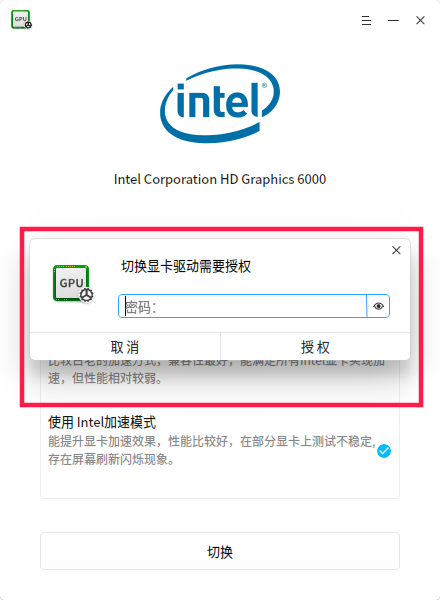

在开发Linux桌面软件的时候，应用的大部分操作都是以普通用户的身份来运行的，这样比较安全。但又有时候我们需要用其他用户的身份执行一些操作，通常是root用户。
以gedit为例
通常我们都是直接执行 sudo gedit 来临时提升权限，这时我们需要手动输入密码进行验证
1 | echo "passwd" | sudo -S gedit |
如果使用这种方法，密码无误的话就可以正常执行了，不会弹出授权窗口。你可以自己写一个弹窗，如果这样，在索要用户权限的时候，程序就可以获得用户的密码了（容易受到用户的质疑），自己使用的程序倒是无妨，如果软件是需要开放给用户使用不推荐。
如图所示：

这个窗口常见到吧，这个是怎么调出来的呢？
常见的Linux发行版都有polkit模块，deepin也开发了一套，称为dde-polkit-agent，它是遵守polkit的freedesktop规范的。
我们只要配置好规则文件然后在终端执行：pkexec [可执行文件] 就可以看到这个授权窗口
以deepin的/usr/share/polkit-1/actions/com.deepin.pkexec.dde-file-manager.policy文件为例：
示例中被 <！-- --> 包裹的是注释，会被polkit忽略掉
1 | <?xml version="1.0" encoding="UTF-8"?> |
只需要根据你的需要创建一份这样的文件（以policy结尾），然后保存到/usr/share/polkit-1/action这个目录下。
可以执行 pkaction 查看现有的policy
在终端执行 pkexec [二进制可执行文件]
当然，根据上述配置文件，显然应该执行 pkexec /usr/bin/dde-file-manager。
如果要给脚本提权怎么办呢？因为pkexec后面需要接一个二进制的可执行文件，我们就需要借助一个shell解释器——它是一个二进制的可执行文件，我们选用/bin/bash，先给bash创建一个policy文件(deepin不用创建，已经有了)，然后执行 pkexec /bin/bash -x [脚本] 将脚本作为bash的参数。
不过在deepin下执行有个BUG，因为深度显卡驱动管理器的脚本提权用到了bash，所以脚本提权会显示驱动管理器的图标和提示。